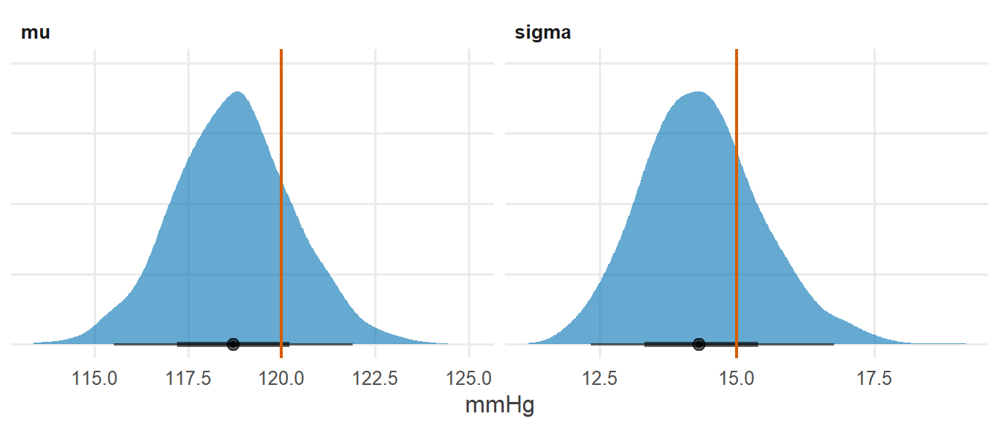

library(tidyverse)
library(cmdstanr)
library(posterior)
library(tidybayes)
source("R/theme.R")
source("R/utils.R")第 2 章 Stan 程序的骨架
一个 Stan 程序最多由七个块组成。每个块负责什么、执行多少次、能看见哪些变量？
打开任何一个 Stan 程序，你都会看到一组用花括号包起来的“块”：data { ... }、parameters { ... }、model { ... } 等等。初学者常把它们当作固定格式照抄。其实每个块都有明确的职责，而且执行的次数相差悬殊：有的块只执行一次，有的块要执行成千上万次。
理解了这一点，就能回答很多“这一行该放在哪里”的问题。
1 本章要回答的问题
- 一个 Stan 程序由哪些块组成？每个块负责什么？
- 为什么块的顺序是固定的？每个块执行多少次？
- 为什么要区分
transformed data、transformed parameters和generated quantities？一个量应该放在哪个块里？
2 公式卡片
本章用一个最简单的模型：估计一组血压测量值的均值和标准差。为了展示所有的块，我们让采样在标准化尺度上进行，再换算回原始尺度。
正态模型（标准化尺度）
\[ \begin{aligned} \tilde{y}_i &= \frac{y_i - \bar{y}}{s_y} \\[4pt] \tilde{y}_i &\sim \operatorname{Normal}(\tilde{\mu},\ \tilde{\sigma}) \\ \tilde{\mu} &\sim \operatorname{Normal}(0,\ 1) \\ \tilde{\sigma} &\sim \operatorname{Exponential}(1) \\[4pt] \mu &= \bar{y} + s_y\, \tilde{\mu}, \qquad \sigma = s_y\, \tilde{\sigma} \\ \mathrm{CV} &= \sigma / \mu \end{aligned} \]
公式卡片中的每一行，都对应 Stan 程序中的某一个块：
| 公式 | 性质 | 放进哪个块 |
|---|---|---|
| \(y_i\)、\(N\) | 已知数据 | data |
| \(\bar{y}\)、\(s_y\)、\(\tilde{y}_i\) | 只依赖数据的计算 | transformed data |
| \(\tilde{\mu}\)、\(\tilde{\sigma}\) | 未知参数 | parameters |
| \(\mu\)、\(\sigma\) | 参数的确定性函数，希望保存在输出中 | transformed parameters |
| 先验与似然 | 对数密度 | model |
| \(\mathrm{CV}\)、\(y^{\text{rep}}\) | 只用于报告的衍生量 | generated quantities |
coef_var() |
可复用的计算 | functions |
3 模拟数据
研究情境：测量 80 名成年人的收缩压（mmHg）。
set.seed(2026)
N <- 80
mu_true <- 120 # mean systolic blood pressure (mmHg)
sigma_true <- 15 # SD between people (mmHg)
sim_data <- tibble(sbp = round(rnorm(N, mu_true, sigma_true)))
sim_data |>
summarise(mean = mean(sbp), sd = sd(sbp), min = min(sbp), max = max(sbp))#> # A tibble: 1 × 4
#> mean sd min max
#> <dbl> <dbl> <dbl> <dbl>
#> 1 119. 14.2 82 1524 Stan 代码
// Chapter 2: A Stan program that uses all seven blocks
//
// y_i ~ Normal(mu, sigma)
// Sampling is done on the standardized scale, then mapped back.
functions {
// Coefficient of variation: SD relative to the mean
real coef_var(real m, real s) {
return s / m;
}
}
data {
int<lower=0> N; // number of observations
vector<lower=0>[N] y; // systolic blood pressure (mmHg)
}
transformed data {
real y_mean = mean(y); // computed once, before sampling
real y_sd = sd(y);
vector[N] y_std = (y - y_mean) / y_sd;
}
parameters {
real mu_std; // mean on the standardized scale
real<lower=0> sigma_std; // SD on the standardized scale
}
transformed parameters {
real mu = y_mean + y_sd * mu_std; // mean on the original scale (mmHg)
real<lower=0> sigma = y_sd * sigma_std;
}
model {
// Priors (standardized scale)
target += normal_lpdf(mu_std | 0, 1);
target += exponential_lpdf(sigma_std | 1);
// Likelihood (standardized scale)
target += normal_lpdf(y_std | mu_std, sigma_std);
}
generated quantities {
real cv = coef_var(mu, sigma); // uses the user-defined function
array[N] real y_rep = normal_rng(rep_vector(mu, N), sigma);
}七个块按固定顺序排列。下面逐块说明。
4.1 functions：自定义函数
functions {
// Coefficient of variation: SD relative to the mean
real coef_var(real m, real s) {
return s / m;
}
}functions 块里定义的函数可以在后面所有块中调用。函数要声明参数类型和返回类型，例如 real coef_var(real m, real s) 表示：接收两个实数，返回一个实数。
4.2 data：从外部读入的已知量
data {
int<lower=0> N; // number of observations
vector<lower=0>[N] y; // systolic blood pressure (mmHg)
}data 块只做声明，不做计算。具体数值由 R 端以列表形式传入，名字必须一一对应。
4.3 transformed data：只依赖数据的预处理
transformed data {
real y_mean = mean(y); // computed once, before sampling
real y_sd = sd(y);
vector[N] y_std = (y - y_mean) / y_sd;
}均值、标准差、标准化后的向量，都只依赖数据，与参数无关。它们在采样开始前计算一次，之后一直保持不变。
4.4 parameters：采样器要探索的未知量
parameters {
real mu_std; // mean on the standardized scale
real<lower=0> sigma_std; // SD on the standardized scale
}parameters 块同样只做声明。采样器在这些变量构成的空间中移动，每一步都会给它们赋新的值。
4.5 transformed parameters：参数的确定性函数
transformed parameters {
real mu = y_mean + y_sd * mu_std; // mean on the original scale (mmHg)
real<lower=0> sigma = y_sd * sigma_std;
}\(\mu\) 和 \(\sigma\) 完全由 \(\tilde{\mu}\)、\(\tilde{\sigma}\) 决定，不需要再单独采样。放在这里的变量会出现在输出中，可以直接汇总和画图。
4.6 model：累加对数密度
model {
// Priors (standardized scale)
target += normal_lpdf(mu_std | 0, 1);
target += exponential_lpdf(sigma_std | 1);
// Likelihood (standardized scale)
target += normal_lpdf(y_std | mu_std, sigma_std);
}model 块是整个程序的核心：它定义了后验分布的对数密度（相差一个常数）。采样器的每一步，都要靠它来判断“这里的后验密度有多高、该往哪个方向走”。
4.7 generated quantities：每次抽样之后的衍生量
generated quantities {
real cv = coef_var(mu, sigma); // uses the user-defined function
array[N] real y_rep = normal_rng(rep_vector(mu, N), sigma);
}这里调用了自定义函数 coef_var() 计算变异系数，并生成后验预测数据 y_rep。
5 R 端运行
mod_skeleton <- cmdstan_model("stan/ch02_skeleton.stan")
fit_skeleton <- mod_skeleton$sample(
data = list(N = nrow(sim_data), y = sim_data$sbp),
seed = 2026,
chains = 4,
parallel_chains = 4,
refresh = 0
)#> Running MCMC with 4 parallel chains...#> Chain 1 finished in 0.1 seconds.
#> Chain 2 finished in 0.1 seconds.
#> Chain 3 finished in 0.1 seconds.
#> Chain 4 finished in 0.1 seconds.
#>
#> All 4 chains finished successfully.
#> Mean chain execution time: 0.1 seconds.
#> Total execution time: 0.3 seconds.6 后验整理与可视化
输出中有哪些变量？
fit_skeleton$metadata()$stan_variables#> [1] "lp__" "mu_std" "sigma_std" "mu" "sigma" "cv"
#> [7] "y_rep"注意：parameters、transformed parameters、generated quantities 三个块中声明的变量都在输出中；transformed data 中的 y_mean、y_sd、y_std 不在输出中；model 块中的任何局部变量也不会出现在输出中。
fit_skeleton$summary(c("mu_std", "sigma_std", "mu", "sigma", "cv"))#> # A tibble: 5 × 10
#> variable mean median sd mad q5 q95 rhat ess_bulk
#> <chr> <dbl> <dbl> <dbl> <dbl> <dbl> <dbl> <dbl> <dbl>
#> 1 mu_std -0.00351 -0.00358 0.113 0.110 -0.187 0.185 1.00 3115.
#> 2 sigma_std 1.01 1.00 0.0779 0.0748 0.887 1.14 1.00 2963.
#> 3 mu 119. 119. 1.61 1.56 116. 121. 1.00 3115.
#> 4 sigma 14.4 14.3 1.11 1.06 12.6 16.3 1.00 2963.
#> 5 cv 0.121 0.120 0.00949 0.00917 0.106 0.138 1.00 2992.
#> # ℹ 1 more variable: ess_tail <dbl>fit_skeleton |>
gather_draws(mu, sigma) |>
ggplot(aes(x = .value)) +
stat_halfeye(fill = f2s_colors[["post"]], alpha = 0.6, normalize = "panels") +
geom_vline(
data = tibble(.variable = c("mu", "sigma"), true = c(mu_true, sigma_true)),
aes(xintercept = true), colour = f2s_colors[["truth"]], linewidth = 0.8
) +
facet_wrap(~ .variable, scales = "free") +
labs(x = "mmHg", y = NULL) +
theme(axis.text.y = element_blank())
7 为什么这样写
7.1 每个块到底执行多少次？
这是理解骨架最关键的一点。我们做一个小实验：在每个块里加一句 print()，然后数一数输出了多少次。
// Chapter 2: The same program with print() in each block,
// used only to count how often each block is executed.
data {
int<lower=0> N;
vector<lower=0>[N] y;
}
transformed data {
real y_mean = mean(y);
real y_sd = sd(y);
vector[N] y_std = (y - y_mean) / y_sd;
print("[transformed data]");
}
parameters {
real mu_std;
real<lower=0> sigma_std;
}
transformed parameters {
real mu = y_mean + y_sd * mu_std;
real<lower=0> sigma = y_sd * sigma_std;
print("[transformed parameters]");
}
model {
target += normal_lpdf(mu_std | 0, 1);
target += exponential_lpdf(sigma_std | 1);
target += normal_lpdf(y_std | mu_std, sigma_std);
print("[model]");
}
generated quantities {
real cv = sigma / mu;
print("[generated quantities]");
}只跑 1 条链、20 次预热、10 次正式抽样，并用 save_warmup = TRUE 把预热阶段的抽样也保存下来（这样 30 次迭代都会写入输出）。把控制台输出收集起来：
mod_trace <- cmdstan_model("stan/ch02_trace.stan")
trace_log <- capture.output(
fit_trace <- mod_trace$sample(
data = list(N = nrow(sim_data), y = sim_data$sbp),
seed = 2026,
chains = 1,
iter_warmup = 20,
iter_sampling = 10,
save_warmup = TRUE,
refresh = 0
)
)
block_counts <- tibble(block = str_extract(trace_log, "\\[[a-z ]+\\]")) |>
filter(!is.na(block)) |>
count(block, name = "times_executed")
block_counts#> # A tibble: 4 × 2
#> block times_executed
#> <chr> <int>
#> 1 [generated quantities] 30
#> 2 [model] 163
#> 3 [transformed data] 1
#> 4 [transformed parameters] 193n_leapfrog <- fit_trace$sampler_diagnostics(inc_warmup = TRUE, format = "df") |>
pull(n_leapfrog__) |>
sum()
n_leapfrog#> [1] 119把结果整理一下：
count_of <- function(b) block_counts$times_executed[block_counts$block == b]
tibble(
block = c("transformed data", "model", "transformed parameters", "generated quantities"),
times = c(count_of("[transformed data]"), count_of("[model]"),
count_of("[transformed parameters]"), count_of("[generated quantities]")),
explanation = c(
"Once, before sampling",
"Once per log-density evaluation (every leapfrog step, plus initialization)",
"Every time model runs, plus once per saved draw",
"Once per saved draw"
)
) |>
knitr::kable()| block | times | explanation |
|---|---|---|
| transformed data | 1 | Once, before sampling |
| model | 163 | Once per log-density evaluation (every leapfrog step, plus initialization) |
| transformed parameters | 193 | Every time model runs, plus once per saved draw |
| generated quantities | 30 | Once per saved draw |
这个实验揭示了三件事：
transformed data只执行 1 次。放在这里的计算，不论多复杂，都只付出一次代价。model执行了 163 次，远多于 30 次迭代。原因是 HMC 每一次迭代都要沿着轨迹走若干个“跳步”（leapfrog step），每一步都要计算对数密度和梯度。这 30 次迭代一共走了 119 个跳步，model块的执行次数比跳步数还多，多出的部分来自初始化、预热开始时的步长搜索等额外的对数密度计算。generated quantities执行了 30 次，恰好等于保存下来的抽样数（20 次预热 + 10 次正式抽样）。它与跳步数无关，每保存一次抽样就执行一次。
transformed parameters 的次数等于 model 的次数加上 30。这是因为它既要在每次计算对数密度时执行（model 块要用到 \(\mu\) 和 \(\sigma\)），又要在保存每一次抽样时再执行一次，以便把它的值写进输出。
在真实模型中，迭代次数常常是几千次，每次迭代的跳步数可能是几十甚至上百。model 块里的每一行代码，都会被执行几万到几十万次。这就是为什么能放到 transformed data 或 generated quantities 里的计算，就不要放进 model。
7.2 为什么块的顺序是固定的？
每个块只能使用在它之前的块中声明的变量：
| 块 | 能看见的变量 |
|---|---|
transformed data |
data |
transformed parameters |
data、transformed data、parameters |
model |
以上所有 |
generated quantities |
除 model 局部变量之外的以上所有 |
这个顺序与“计算依赖”完全一致：数据先于预处理，参数先于参数的函数，所有这些都准备好之后才能计算对数密度。固定的顺序让程序的依赖关系一目了然。
如果在 model 块中引用 generated quantities 里的 cv，编译器会报错 Identifier "cv" not in scope：此时 cv 还不存在。
7.3 transformed parameters、model 局部变量与 generated quantities，怎么选？
这三个地方都可以放“由参数算出来的量”，区别在于是否参与对数密度计算和是否保存到输出：
| 放在哪里 | 参与对数密度计算 | 保存到输出 | 执行频率 | 典型用途 |
|---|---|---|---|---|
transformed parameters |
是 | 是 | 每个跳步 + 每次保存 | 似然要用、也想汇总的量，如本章的 \(\mu\)、\(\sigma\) |
model 中的局部变量 |
是 | 否 | 每个跳步 | 只在似然中使用的中间量，如线性预测 mu = alpha + beta * x |
generated quantities |
否 | 是 | 每次保存 | 只用于报告的量，如 cv、y_rep、log_lik |
一个简单的决策顺序：
- 似然计算需要它吗？不需要 →
generated quantities。 - 需要，并且你想在输出中看到它 →
transformed parameters。 - 需要，但不必保存 →
model中的局部变量。
7.4 为什么 transformed parameters 上的约束不同于 parameters 上的约束？
本章中 sigma 在 transformed parameters 里也声明了 <lower=0>。这两种约束的作用完全不同：
parameters中的约束会改变采样空间：Stan 自动把参数变换到无约束空间（第 3 章）。transformed parameters中的约束只是检查：如果某一步算出的sigma为负，Stan 会报错并拒绝这一步。它相当于一句断言，帮你尽早发现写错的公式。
7.5 为什么要在标准化尺度上采样？
本章在标准化尺度上采样，主要是为了把七个块都用上。不过这样做也有实际好处：标准化之后，\(\tilde{\mu}\) 和 \(\tilde{\sigma}\) 的量级都在 1 附近，先验也可以用统一的 \(\operatorname{Normal}(0, 1)\) 和 \(\operatorname{Exponential}(1)\)，不必针对“血压是 120 左右”专门设置。当模型中有多个量级差异很大的参数时，这种做法能让采样器的预热调整更顺利。
8 常见错误
| 错误写法 | 后果 | 正确做法 |
|---|---|---|
在 model 块中使用 generated quantities 的变量 |
编译错误：Identifier "..." not in scope |
按依赖顺序放置变量 |
在 transformed parameters 中调用 normal_rng() |
编译错误：随机数函数只能用于 transformed data 和 generated quantities |
把模拟放进 generated quantities |
把只依赖数据的计算（如 mean(y)）写在 model 块 |
能运行，但每个跳步都重复计算 | 移到 transformed data |
把 y_rep、log_lik 这类量写进 transformed parameters |
_rng 无法使用；即使能写，也会在每个跳步重复计算 |
放进 generated quantities |
期望在输出中找到 model 块的局部变量 |
输出中没有这个变量 | 需要保存的量放进 transformed parameters 或 generated quantities |
9 练习
练习 1 给每个量找到它的块
下面这些量分别应该放在哪个块？
- 预测变量的均值 \(\bar{x}\)；(b) 回归系数 \(\beta\)；(c) 线性预测 \(\mu_i = \alpha + \beta x_i\)，只在似然中使用；(d) 后验预测数据 \(y^{\text{rep}}\)；(e) 层级模型中由标准化参数换算出的组均值 \(\alpha_j = \mu + \tau z_j\)，希望汇总报告；(f) 观测的对数似然
log_lik。
提示参考答案
| 量 | 块 | 理由 |
|---|---|---|
| (a) \(\bar{x}\) | transformed data |
只依赖数据，算一次即可 |
| (b) \(\beta\) | parameters |
未知量 |
| (c) \(\mu_i\) | model 中的局部变量 |
似然要用，但不必保存 |
| (d) \(y^{\text{rep}}\) | generated quantities |
需要 _rng，只用于报告 |
| (e) \(\alpha_j\) | transformed parameters |
似然要用，又希望保存 |
(f) log_lik |
generated quantities |
不参与推断，只用于模型比较 |
- 正是第 12 章非中心化写法的标准结构。
练习 2 计算一个后验概率
研究者想知道“总体平均收缩压超过 125 mmHg”的后验概率。请分别用两种方法计算：(a) 在 generated quantities 中增加一个指示变量；(b) 在 R 端直接用抽样计算。
提示参考答案
- 在
generated quantities中加一行：
int<lower=0, upper=1> mu_above_125 = mu > 125;它在每次抽样中取 0 或 1，其后验均值就是所求的概率。
- 在 R 端，直接对抽样做同样的比较：
fit_skeleton |>
spread_draws(mu) |>
summarise(prob_mu_above_125 = mean(mu > 125))#> # A tibble: 1 × 1
#> prob_mu_above_125
#> <dbl>
#> 1 0.00025两种方法结果相同。(b) 更灵活，不必为每个新问题修改并重新编译 Stan 程序；(a) 的好处是把“研究问题”写进了模型文件，便于他人复现。
练习 3 约束是变换还是检查？
如果把 transformed parameters 中的 real<lower=0> sigma 改成 real<lower=100> sigma，会发生什么？如果把 parameters 中的 real<lower=0> sigma_std 改成 real<lower=100> sigma_std 呢？
提示参考答案
- 改
transformed parameters中的约束：\(\sigma\) 实际上约等于 15，不满足“大于 100”。每次计算都会触发检查失败，Stan 无法找到合法的初值，采样无法开始。约束在这里只是检查，它不会把 \(\sigma\)“推”到 100 以上。 - 改
parameters中的约束：\(\tilde{\sigma}\) 被限制在 \((100, \infty)\) 内采样。程序能运行，但这等于强加了一个与数据严重冲突的假设，后验会挤在 100 附近，\(\sigma\) 被严重高估。
两种情况都说明：约束是模型的一部分，必须与参数的真实含义一致。
练习 4 预热越长，model 执行越多
把本章计数实验中的 iter_warmup 改为 200，并去掉 save_warmup = TRUE，model 块的执行次数大约会变成多少？generated quantities 呢？
提示参考答案
trace_log_long <- capture.output(
fit_trace_long <- mod_trace$sample(
data = list(N = nrow(sim_data), y = sim_data$sbp),
seed = 2026,
chains = 1,
iter_warmup = 200,
iter_sampling = 10,
refresh = 0
)
)
tibble(block = str_extract(trace_log_long, "\\[[a-z ]+\\]")) |>
filter(!is.na(block)) |>
count(block, name = "times_executed")#> # A tibble: 3 × 2
#> block times_executed
#> <chr> <int>
#> 1 [model] 651
#> 2 [transformed data] 1
#> 3 [transformed parameters] 651model 块的执行次数随预热长度大幅增加，因为预热阶段同样要走完整的 HMC 轨迹；generated quantities 只执行 10 次，因为这一次只保存了 10 次正式抽样。
10 小结
- Stan 程序最多有七个块：
functions、data、transformed data、parameters、transformed parameters、model、generated quantities。 - 块的顺序就是计算依赖的顺序；每个块只能看见它之前声明的变量。
- 执行频率相差悬殊：
transformed data一次，model每个跳步一次，generated quantities每次保存一次。 - 选块的原则：只依赖数据 →
transformed data；似然要用且要保存 →transformed parameters；似然要用但不保存 →model局部变量；只用于报告 →generated quantities。
11 延伸
- 下一章：第 3 章 数据类型与约束，讲清
vector、array、matrix的区别，以及约束如何改变采样空间。 - Stan 模型库中每个项目的
model.stan都遵循本章的块结构，可以对照阅读。
12 参考资料
- Stan Reference Manual 的 Program Blocks 一章，系统说明了每个块的作用、变量作用域与执行时机 (Stan Development Team, 2026a)。
- Stan User’s Guide 中有大量把计算移到
transformed data和generated quantities以提高效率的例子 (Stan Development Team, 2026b)。 - HMC 每次迭代包含多个跳步的原理，见 Betancourt (2017) 的直观介绍。
Betancourt, M. (2017). A Conceptual Introduction to Hamiltonian Monte Carlo. https://arxiv.org/abs/1701.02434
Stan Development Team. (2026a). Stan Reference Manual (Version 2.40). https://mc-stan.org/docs/reference-manual/
Stan Development Team. (2026b). Stan User’s Guide (Version 2.40). https://mc-stan.org/docs/stan-users-guide/